AI for Coding
Day 1: Core AI concepts
![]()
Distributional Impact of Policies. Fiscal Policy and Growth Department
2026-04-20
Core AI-related concepts worth knowing about
💻 IDE: Integrated Development Environment, e.g., Positron, RStudio, VSCode, and more.
🤖 AI assistants:
- Local software: Positron Assistant, VS Code GitHub Copilot, Claude Code, Copilot CLI …
- Cloud-based providers: GitHub Copilot, MAI, Anthropic Claude API, …
📚 Context: information that AI uses to generate responses.
🔢 Tokens: pieces of text that LLMs process.
❓ Requests: prompts, instructions.
🧠 LLMs: Large Language Models, e.g., GPT, Claude, and more.
❌ Hallucinations: when AI generates incorrect or fabricated information.
🧑🤝🧑 Agents, skills, tools, hooks, plugins, and more (for Day 2).
Integrated Development Environment (IDE)
An IDE is the workspace for coding and executing data analysis:
- a code editor
- a console / terminal
- project navigation
- testing/debugging
- Git and extensions
- AI assistance and more…
There are many IDEs, both with user interfaces (UIs) and as command-line interfaces (CLIs).
Most are made for programming. Positron, RStudio, and JupyterLab — for data science.

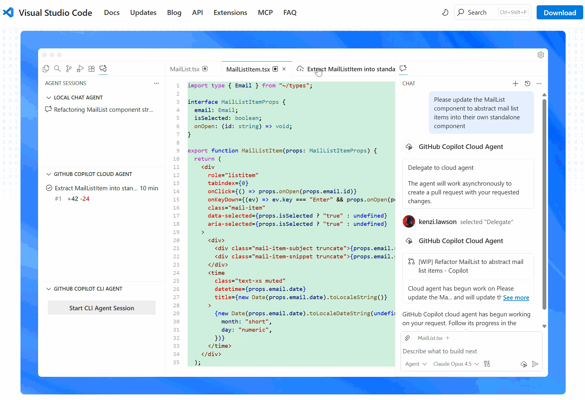

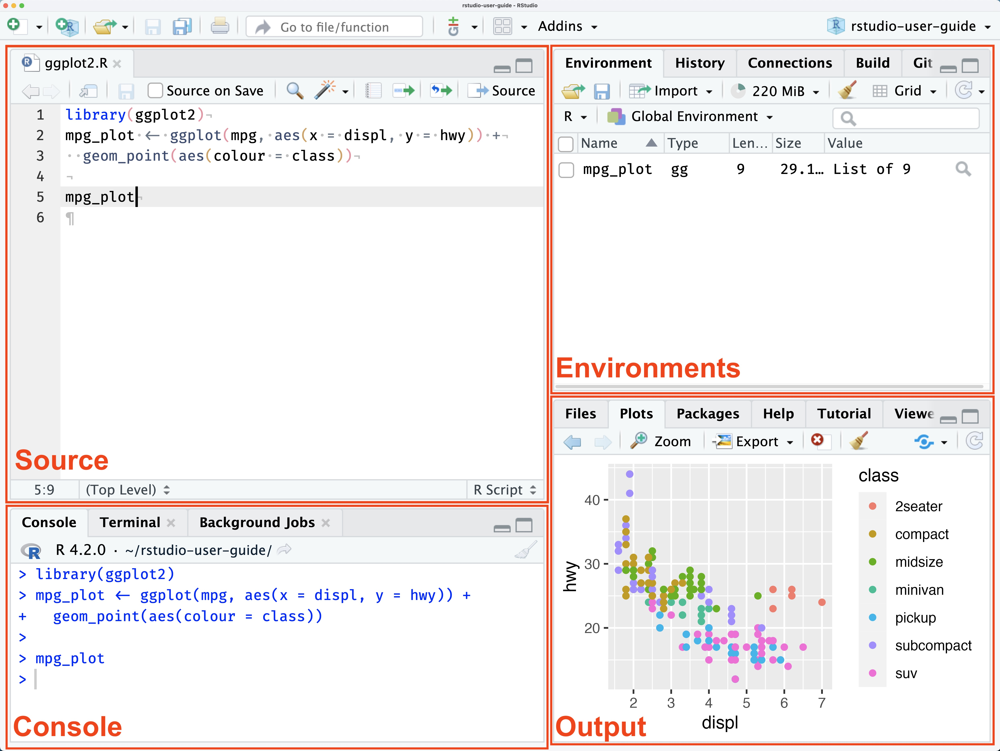
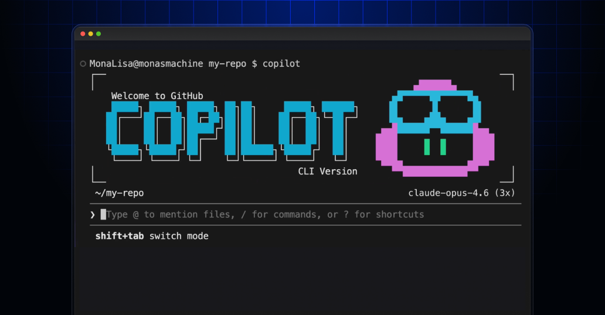

Those are: Positron | VS Code | Cursor | Claude Code | and more…
User-IDE-Assistant: workflow intuition
💻 Code, data, and analysis stay inside the IDE on the user’s computer.
Positron Assistant works in the IDE as a middleman that connects the user, IDE, and cloud-based AI services.
GitHub Copilot is a cloud-based AI orchestrator: coordinates the assistant and LLMs, submits prompts to the LLMs, and pre-processes responses before sending them back to the assistant.
🔢 The LLM:
- ingests the prompt as text,
- converts it into tokens,
- embeds tokens as numeric vectors,
- performs inference to generate a tokenized response, decodes tokens, and
- responds back to the assistant.
✅ The user controls and decides whether to accept, edit, or reject the suggested code.
Context
- 🧠 Context is key for accurate AI responses.
- Every message, file, and code snippet adds to the context.
- 🔧 Context is assembled by the IDE cumulatively.
- 📏 Size is measured in tokens.
- Context has layers: system prompt (hidden instructions that steer the LLM’s behavior in Copilot and Positron) vs. user prompt (your visible messages and attached files).
Be mindful of context size and content.
⚠️ LLMs have a maximum context window (4k–2M tokens) — exceeding it leads to information loss.
Context saturation
⚠️ When the context window fills up, old context is pushed out, causing information loss and reduced quality.
🗜️ Assistants may compress context via LLM summarization — but this is suboptimal: key details can be lost.
Best practices:
- 📁 Explicitly attach only relevant files.
- 🔄 Start a new session often.
- 📝 Ask AI to summarize the conversation in a file to preserve key context, curate it, and use it as a starting point for the new conversation.
- ⚙️ Use system instructions, prompt files, and skills (Day 2).
IDE + AI assistant: data risks
💾 Data/secrets in console → context exposed to model
📂 LLM may include data files (
csv,json,txt) → data exposed to model🔐 Source code → code is context, can leak
💥 Insecure/destructive actions → always review before accepting
Be cautious with sensitive data. Review all suggestions. Ask the LLM to explain its suggestions. Follow recommendations to safeguard data
Use AI responsibly and securely: https://ai.worldbank.org/risk-mitigation
Tokens and embeddings
- 🔢 Tokens are text units (words, subwords) forming the LLM vocabulary (GPT-3: 50k tokens; Claude: speculated ~200k).
- 🧠 Each token is embedded as a numeric vector (GPT-3: 12,288 dimensions) — a sentence becomes a matrix of vectors.
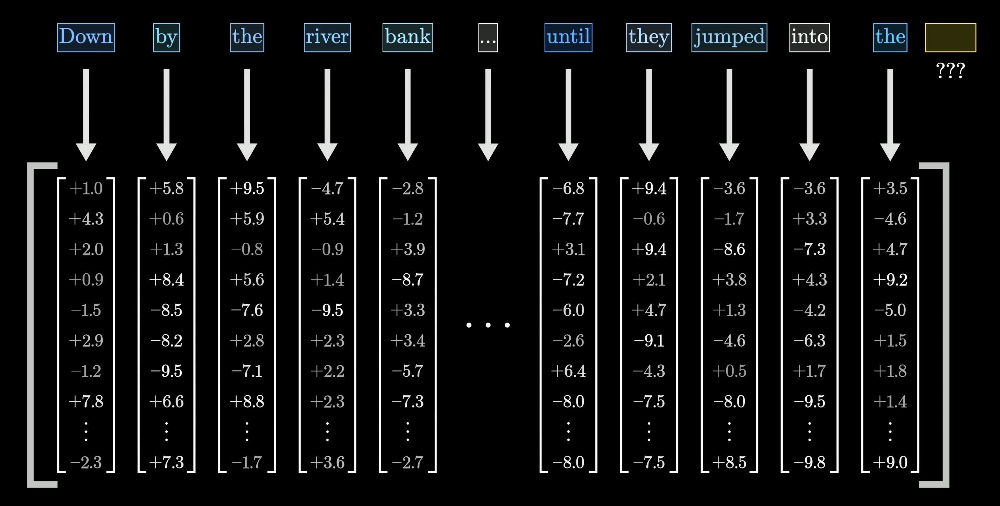
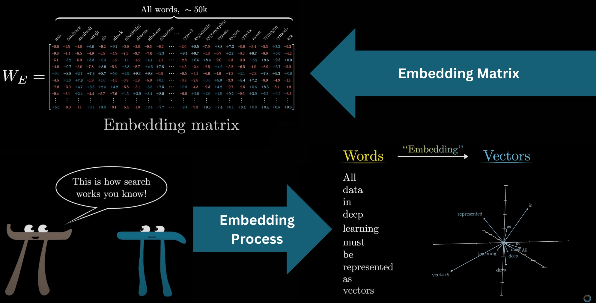
From Neural Networks Series by 3Blue1Brown and NN-Full Video Course
LLM Training
- 🧠 LLMs are trained on massive text datasets (GPT-3: ~300B tokens / 570GB; modern models: >15T tokens).
- The model learns to predict the next token given previous tokens, updating its weights via backpropagation.
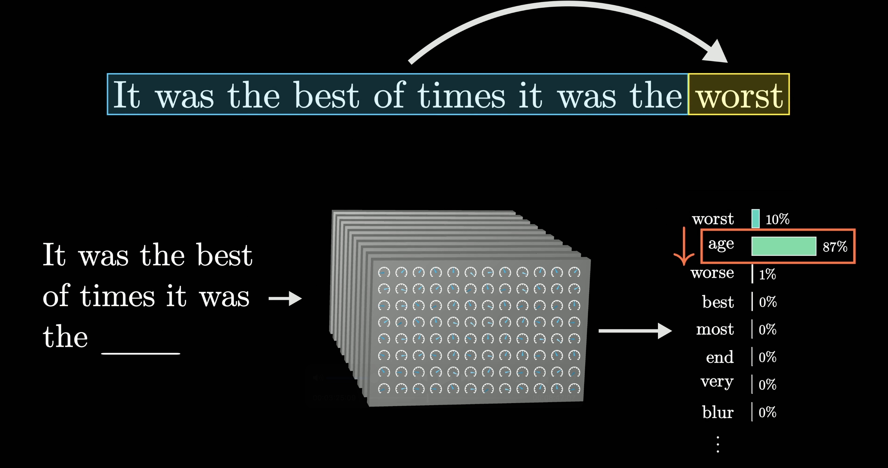
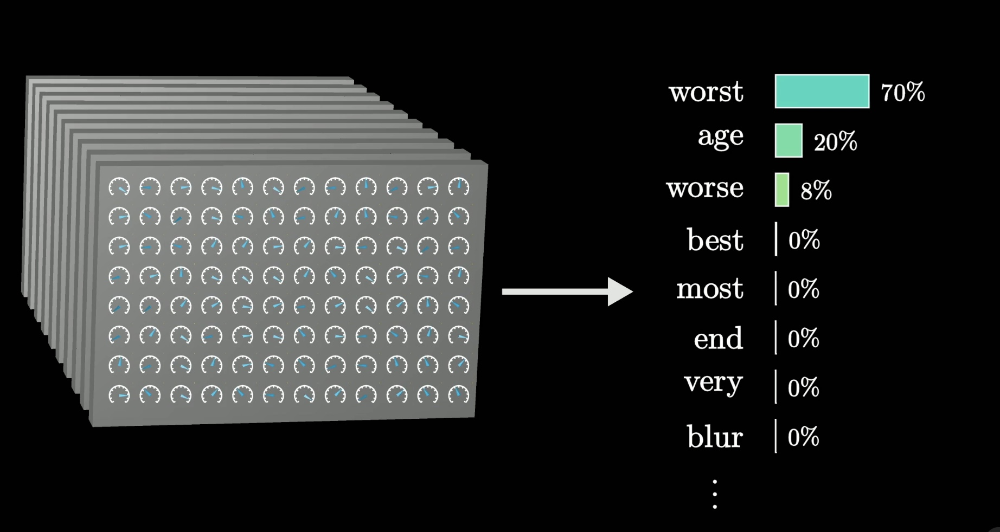
From Neural Networks Series by 3Blue1Brown and NN-Full Video Course
LLMs are probabilistic
- LLMs respond with a distribution of likely next words and then sample one using a decoding strategy (e.g., Temperature or Top-k sampling).
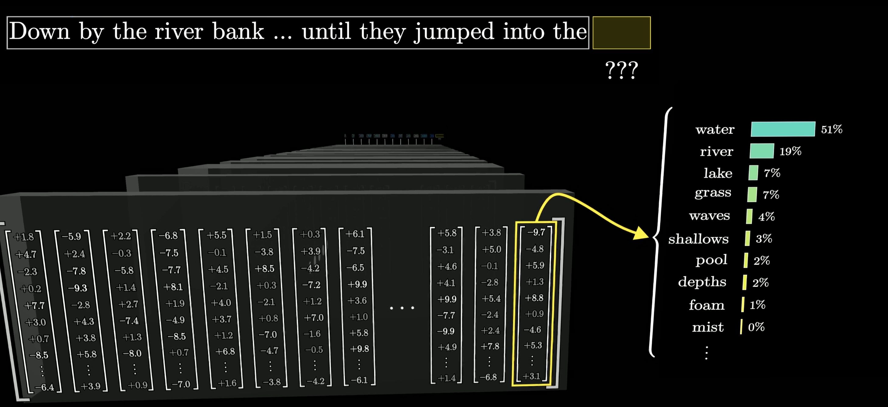
Next-token prediction example from 3Blue1Brown
From Neural Networks Series by 3Blue1Brown and NN-Full Video Course
LLMs are context-dependent
- Responses depend on the context of the prompt.
- Context size and quality affect accuracy.
- Claude Sonnet/Opus: 64k–2M token context window (GPT-3 had 8k).
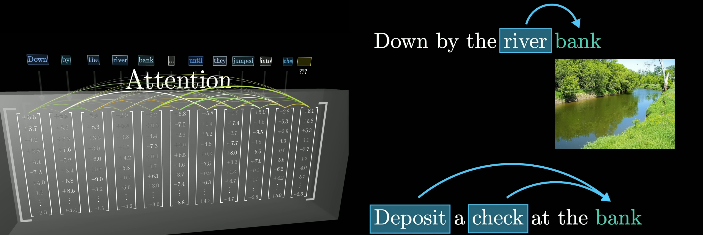
Context-dependent LLM prediction from 3Blue1Brown
From Neural Networks Series by 3Blue1Brown and NN-Full Video Course
LLM inference
- The process of generating responses based on the input prompt, which contains all the context.
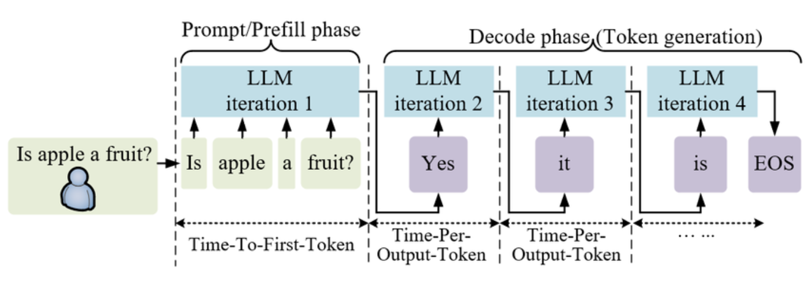
LLM inference diagram
Adapted from 10.48550/arXiv.2408.02549
Hallucinations
Hallucinations occur when an LLM generates text that is fluent, confident, and wrong. Common causes: insufficient or irrelevant context, training data biases or gaps, and over-generalization of learned patterns.
Hallucination patterns
- Fake citations
- Wrong but close facts
- Entity blending
- Overconfident extrapolation: correctly reasoning partway through a problem, then guessing the rest as if it were known.
- Recency failures
Mitigation:
- Provide more context.
- Ask for step-by-step reasoning.
- Verify with external sources.
- Use fresh agents to fact-check and verify results by re-reading sources.
Day 2 outlook: Agents, tools, and skills
We will focus Day 2 on advanced AI features that enrich context and mitigate hallucinations:
🔧 Tools — connect LLMs to your file system, APIs, applications, databases, and the Internet.
📝 Prompt files and custom instructions — pre-load specific context and steer or template LLM responses.
🗺️ Plan mode — break down complex tasks into smaller steps, discuss implementation with the LLM, and execute an actionable plan.
🧩 Skills — knowledge that AI plugs into context when it encounters a specific problem.
🤖 Agents — AI-driven programs that autonomously execute tasks by orchestrating tools, skills, and APIs sequentially.
Would you like to read/watch more about LLMs?
Check out:
- 3Blue1Brown’s

worldbank.github.io/ai4coding © 2026 World Bank.